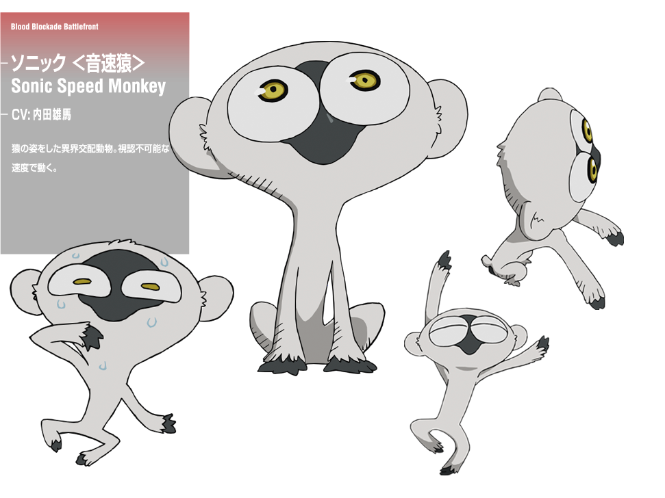

Universo Blood Blockade Battlefront
Sonic

Sonic speed monkey
É uma espécie de macacos que se deslocam com velocidade do som.
Aparência
Um pequeno macaco branco com cabeça grande e olhos amarelos grandes.

Personalidade
Ele parece ter uma personalidade scaredy-gato peculiar e é um pouco de um glutão.
Sônic parece ter sua própria vontade, e segue Leonardo em um capricho.
Plot
O macaco velocidade do som roubou a câmera do Leo enquanto ele estava em uma lanchonete.
Enquanto Leo estava perseguindo-o, eles foram pegos em um tiroteio entre um criminoso ea polícia.
O macaco desmaiou com o choque. Mais tarde, o macaco junto com Leo foi trazido para a base de Libra.
Quando o portão que Femto colocar abriu, todo mundo acha que o macaco era a porta e tentou pegá-lo.
Cadeia foi atrás dele, mas só foi capaz de manter o controle do macaco e não foi capaz de pegá-lo.
Quando Leo teve a chance de matar o macaco e fechar a porta, usando os olhos, viu que o portão foi realmente uma pulga no macaco e esmagou a pulga. Femto ficou chocado quando ele estava esperando que eles vão matar o macaco, que teria aberto a porta, em vez de fechá-lo.
Power & Habilidades
Movimento em um nível velocidade do som